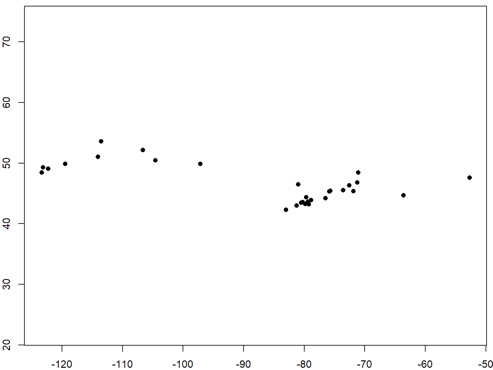
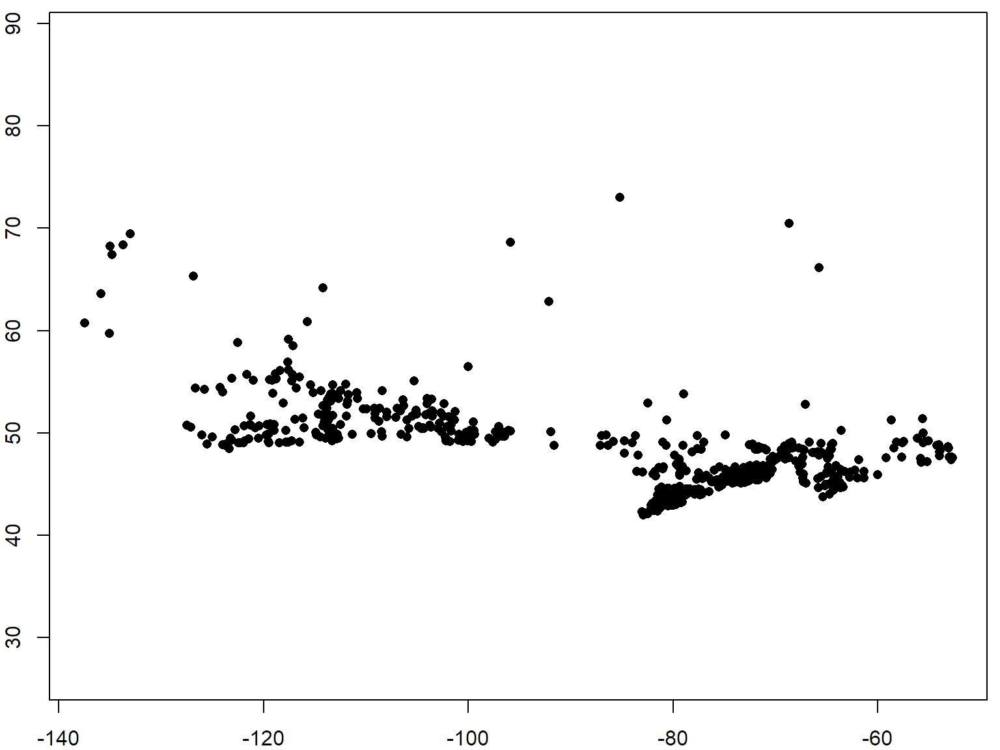

Two-Dimensional Data
Data structures with rows and columns are ubiquitous in many fields. R has two data classes to store 2D data - matrices and data frames.
|
Property
|
Matrix
|
Data Frame
|
|
data type
|
entire matrix must use the same data type
|
each column can be a different data type
|
|
column labels
|
optional, can be defined as an attribute for display
|
built-in, columns can referenced by name
|
|
more than two dimensions
|
allowed (called an array)
|
not allowed
|
|
can add rows and columns
|
yes
|
yes
|
|
matrix algebra
|
allowed
|
not supported
|
To create a matrix from scratch, use the matrix() function.
mat <- matrix(data=rnorm(9), nrow = 3, ncol=3)
mat
## [,1] [,2] [,3]
## [1,] 0.05854429 -2.1016658 -2.7262069
## [2,] 0.33658396 0.9124243 1.2716362
## [3,] 2.29807661 -0.8623717 -0.1455509
There are number of sample datasets that come with R, many of which are data frames. Functions to explore data frames include names(), head(), nrow(), ncol(), dim().
## [1] "mpg" "cyl" "disp" "hp" "drat" "wt" "qsec" "vs" "am" "gear"
## [11] "carb"
## mpg cyl disp hp drat wt qsec vs am gear carb
## Mazda RX4 21.0 6 160 110 3.90 2.620 16.46 0 1 4 4
## Mazda RX4 Wag 21.0 6 160 110 3.90 2.875 17.02 0 1 4 4
## Datsun 710 22.8 4 108 93 3.85 2.320 18.61 1 1 4 1
## Hornet 4 Drive 21.4 6 258 110 3.08 3.215 19.44 1 0 3 1
## Hornet Sportabout 18.7 8 360 175 3.15 3.440 17.02 0 0 3 2
## Valiant 18.1 6 225 105 2.76 3.460 20.22 1 0 3 1
## [1] 32
## [1] 11
You can grab an individual column by name with the $ selector.
## [1] "numeric"
## Min. 1st Qu. Median Mean 3rd Qu. Max.
## 1.513 2.581 3.325 3.217 3.610 5.424
plot(x=mtcars$wt, y=mtcars$mpg, pch=16, main="Gas Mileage vs Weight")

Selecting Rows and Columns
Similar to vectors, you can reference specific rows specific rows and columns with square bracket notation. Only this time we need two expressions separated by a comma.
mydataframe[ rows , cols ]
Like vectors, the expression for rows & cols can be integers (row and column indices), or Booleans. In addition, with data frames you can use a vector of column names to specific the columns. To return all the rows or all the columns, omit the expression.
library(maps)
data(canada.cities)
head(canada.cities)
## name country.etc pop lat long capital
## 1 Abbotsford BC BC 157795 49.06 -122.30 0
## 2 Acton ON ON 8308 43.63 -80.03 0
## 3 Acton Vale QC QC 5153 45.63 -72.57 0
## 4 Airdrie AB AB 25863 51.30 -114.02 0
## 5 Aklavik NT NT 643 68.22 -135.00 0
## 6 Albanel QC QC 1090 48.87 -72.42 0
Columns can be specified either by name or index number. The following two expressions are equivalent (note how the expression for rows has been omitted, so all rows are returned).
## [1] "Abbotsford BC" "Acton ON" "Acton Vale QC" "Airdrie AB"
## [5] "Aklavik NT" "Albanel QC"
head(canada.cities[,"name"])
## [1] "Abbotsford BC" "Acton ON" "Acton Vale QC" "Airdrie AB"
## [5] "Aklavik NT" "Albanel QC"
The rows expression can also be an expression that returns logicals.
idx <- (canada.cities$pop > 100000)
table(idx)
## idx
## FALSE TRUE
## 887 29
big_cities <- canada.cities[idx, ]
plot(big_cities[ , c("long","lat")], asp=1, pch=16 )

Appending rows
You can append two data frames with the rbind() (row bind) function. This requires the two data frames to have the same columns in the same order.
small_cities <- canada.cities[canada.cities$pop < 5000, ]
nrow(small_cities)
## [1] 598
small_plus_big_cities <- rbind(small_cities, big_cities)
plot(small_plus_big_cities[ , c("long","lat")], asp=1, pch=16 )

Adding columns
To add a column, you can just assign values to it. R will create the column on the fly.
big_cities$mynewcol <- 1:nrow(big_cities)
head(big_cities)
## name country.etc pop lat long capital
## 1 Abbotsford BC BC 157795 49.06 -122.30 0
## 41 Barrie ON ON 198492 44.38 -79.68 0
## 106 Calgary AB AB 991432 51.05 -114.06 0
## 155 Chicoutimi-Jonquiere QC QC 110582 48.43 -71.08 0
## 230 Edmonton AB AB 831979 53.57 -113.54 2
## 312 Guelph ON ON 117979 43.56 -80.26 0
## mynewcol
## 1 1
## 41 2
## 106 3
## 155 4
## 230 5
## 312 6
You can also add columns with transform() or mutate() from the dplyr package. You can also append a column from another data frame (presuming the rows are in the same order) with cbind().